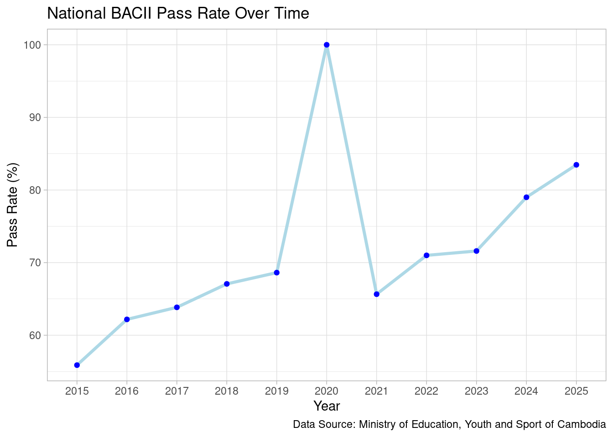
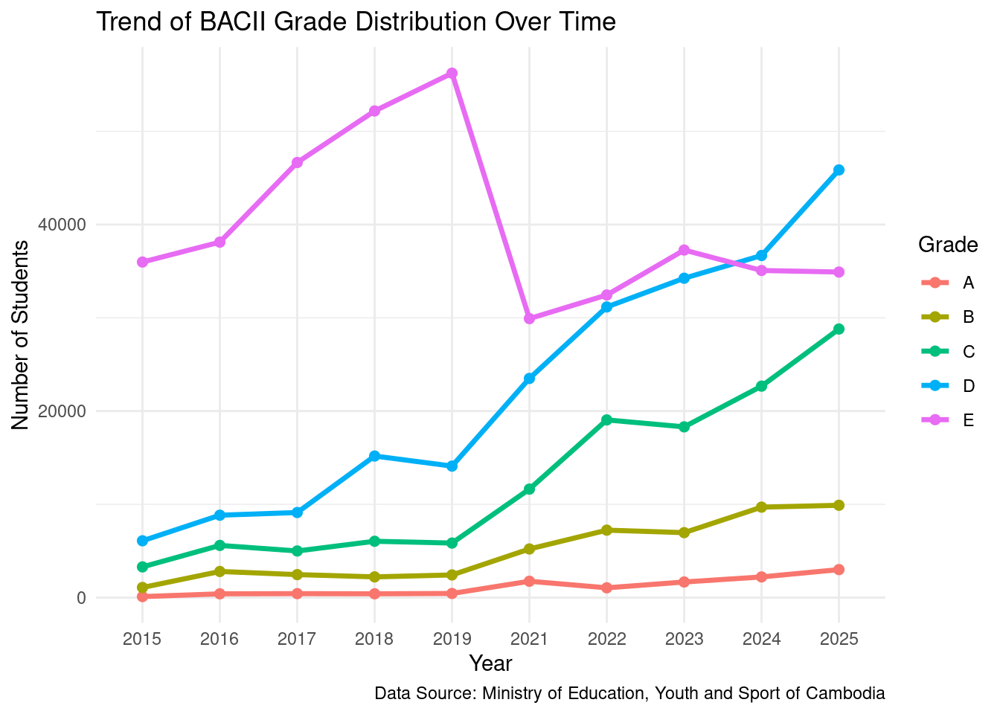
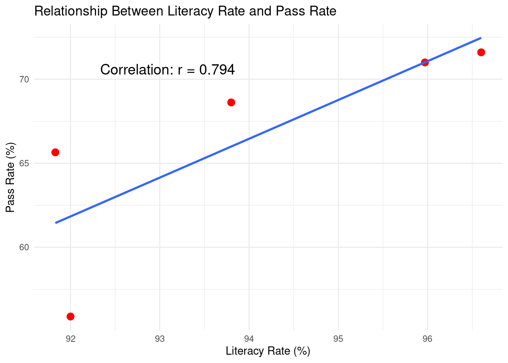

#loaded all needed library
library(dplyr)
library(ggplot2)
library(readr)
library(tidyr)
library(knitr)Is the National Exam a Good Measure of Student Success in Cambodia?
DSCI-140, Fall 2025 - Final Project
1 Purpose
This project explores whether Cambodia’s national Grade 12 exam (BACII) is an effective measure of student success. The national exam plays a major role in determining students’ educational and career opportunities, so understanding its fairness and accuracy matters for policymakers, educators, and families. By examining trends in pass rates, grade distributions, and literacy levels over time, this analysis highlights whether exam outcomes reflect broader educational progress or simply fluctuate due to policy and social factors.
I hope readers will gain a clearer understanding of how reliable the exam is and what its results truly say about student achievement in Cambodia.
2 Data
For this analysis, I used data on national exam pass rates, grades, and youth literacy rates over the past 10 years.
- Data Source:
- Ministry of Education, Youth and Sport of Cambodia’s Facebook Page: The only available data
- World Bank Group: credibility and everything is in one place
- Data upload: Importing the data into R was straightforward and easy.
- Problems encountered:
- Collecting the data was challenging because the Ministry of Education’s website was not functioning. I had to gather raw data from Facebook, which serves as one of the main platforms for broadcasting previous exam results. This required scrolling through many posts to locate the relevant information.
- Converting the information from Khmer to English added another layer of complexity during the data wrangling process.
2.1 Data Dictionary
Data set features:
year— Year of the national exam cycle (feature: temporal indicator).total_student_registered— Number of students registered (feature: population size).total_pass— Number of students who passed (feature: raw outcome measure).pass_rate— Percentage of students who passed (feature: normalized performance metric).grade_a— Count of students earning Grade A (feature: performance distribution).grade_b— Count of students earning Grade B (feature: performance distribution).grade_c— Count of students earning Grade C (feature: performance distribution).grade_d— Count of students earning Grade D (feature: performance distribution).grade_e— Count of students earning Grade E (feature: minimum passing category).youth_literacy_rate— Literacy rate for youths ages 15–24 (feature: national education indicator).youth_neet— Youth not in education, employment, or training rate for youths ages 15–24 (feature: national education indicator).
2.2 Data Processing
To prepare the data, I imported two data sets: one with national exam results and another with youth literacy statistics. Because the files came from different sources and formats, I cleaned each dataset separately. Several exam columns were stored as text due to formatting issues, so I converted them to numeric values using parse_number() and as.numeric(). I also removed unnecessary columns, such as youth_neet, which was not relevant to my analysis.
After cleaning, I merged the two datasets using full_join() by year, creating a single dataset with a consistent unit of analysis: national summary statistics by year. This allowed exam results and literacy rates to be compared side-by-side. I then used kable() to produce a readable summary table. These steps transformed unstructured raw data from PDFs, Facebook posts, and CSV files into a standardized data set suitable for analysis.
#load file
raw_bacii <- read_csv("data/bacii_result.csv")
lit_neet <- read_csv("data/literacy_neet.csv")
# Convert columns
new_bacii <- raw_bacii |>
mutate(
total_student_registered = parse_number(as.character(total_student_registered)),
pass_rate = as.numeric(pass_rate)
)
# Remove youth_neet column if present
new_lit <- lit_neet |>
select(-any_of("youth_neet"))
# Merge datasets
combined_data <- full_join(new_bacii, new_lit, by = "year")
# Display combined table
combined_data |>
kable(
col.names = c(
"Year", "Total registered", "Total pass", "Pass Rate",
"Grade A", "Grade B", "Grade C", "Grade D", "Grade E",
"Literacy Rate"
),
caption = "Cambodia National Exam Statistics 2015-2025"
)| Year | Total registered | Total pass | Pass Rate | Grade A | Grade B | Grade C | Grade D | Grade E | Literacy Rate |
|---|---|---|---|---|---|---|---|---|---|
| 2015 | 88488 | 46560 | 55.88 | 108 | 1085 | 3292 | 6093 | 35982 | 92.00 |
| 2016 | 115200 | 55753 | 62.18 | 405 | 2801 | 5595 | 8835 | 38117 | NA |
| 2017 | 99700 | 63668 | 63.84 | 424 | 2464 | 5000 | 9123 | 46657 | NA |
| 2018 | 113300 | 76034 | 67.07 | 408 | 2222 | 6041 | 15180 | 52183 | NA |
| 2019 | 115200 | 79052 | 68.62 | 443 | 2430 | 5847 | 14100 | 56232 | 93.80 |
| 2020 | NA | NA | 100.00 | NA | NA | NA | NA | NA | 94.30 |
| 2021 | 114180 | 72016 | 65.65 | 1753 | 5215 | 11634 | 23499 | 29915 | 91.83 |
| 2022 | 128136 | 90950 | 71.00 | 1049 | 7232 | 19053 | 31166 | 32450 | 95.97 |
| 2023 | 137412 | 98460 | 71.60 | 1673 | 6964 | 18308 | 34246 | 37269 | 96.60 |
| 2024 | 137040 | 106351 | 79.00 | 2216 | 9701 | 22675 | 36683 | 35076 | NA |
| 2025 | 146720 | 122473 | 83.47 | 3003 | 9901 | 28801 | 45859 | 34909 | NA |
# Create summary values
summary_values <- combined_data |>
summarize(
mean_pass = mean(pass_rate, na.rm = TRUE),
mean_literacy = mean(youth_literacy_rate, na.rm = TRUE)
)
# Build summary table
summary_table <- tibble(
Statistic = c(
"Mean Pass Rate (%)",
"Mean Youth Literacy Rate (%)"
),
Value = c(
summary_values$mean_pass,
summary_values$mean_literacy
)
)
# Display table
kable(
summary_table,
col.names = c("Statistic", "Value"),
caption = "Summary of National Exam Pass Rate and Literacy Statistics (2015–2025)"
)| Statistic | Value |
|---|---|
| Mean Pass Rate (%) | 71.66455 |
| Mean Youth Literacy Rate (%) | 94.08333 |
3 Analysis
3.1 Plot 1: Pass rate over time
ggplot(combined_data, aes(x = factor(year), y = pass_rate, group = 1)) +
geom_line(size = 1.2, color = "lightblue") +
geom_point(color = "blue") +
labs(
title = "National BACII Pass Rate Over Time",
x = "Year",
y = "Pass Rate (%)",
caption = "Data Source: Ministry of Education, Youth and Sport of Cambodia"
) +
theme_light()
Description
This plot shows how the national BACII pass rate has changed over the last decade. A line graph is ideal for this visualization because pass rate is a continuous variable measured over time, and connecting the yearly points helps reveal overall trends. The added points highlight each year’s exact value, making the changes easier to interpret.
The plot makes long-term patterns clear. From 2015 to 2019, the pass rate rises steadily. In 2020, the exam was cancelled due to COVID-19, resulting in a 100% pass rate, which is an unusual event that highlights how external circumstances affected the exam’s role and importance. After 2020, the pass rate initially drops below the 2019 level but begins to climb again in the following years, suggesting a gradual return to pre-pandemic performance trends.
3.2 Plot 2: Grade distribution over time
# remove 2020 (no grades)
grade_data <- combined_data |>
filter(!is.na(grade_a))
grade_data |>
pivot_longer(cols = starts_with("grade_"),
names_to = "grade",
values_to = "count") |>
ggplot(aes(x = factor(year), y = count, color = grade, group = grade)) +
geom_line(size = 1.2) +
geom_point(size = 2) +
labs(
title = "Trend of BACII Grade Distribution Over Time",
x = "Year",
y = "Number of Students",
color = "Grade",
caption = "Data Source: Ministry of Education, Youth and Sport of Cambodia"
) +
scale_color_discrete(
labels = c(
"grade_a" = "A",
"grade_b" = "B",
"grade_c" = "C",
"grade_d" = "D",
"grade_e" = "E"
)
) +
theme_minimal()
Description
This plot highlights how the distribution of exam grades has changed over time. A long-format dataset and multi-line graph are used so that each grade category can be compared side-by-side across years. This format is ideal because it reveals differences between higher (A/B) and lower (D/E) grades more clearly than a bar chart or stacked plot.
The visualization shows whether certain grades are becoming more or less common. For example, an upward trend in Grade A or B counts would suggest improving performance, while increases in Grade D or E might indicate weaker academic outcomes. The grade patterns provide more nuance than the pass rate alone, and in some years the trends can be surprising—for instance, when pass rates rise but high-grade counts remain flat. Notably, the number of students receiving Grade A drops sharply from 2019 to 2021, highlighting a significant shift in performance during that period.
3.3 Plot 3: Correlation
plot3_data <- grade_data |>
filter(!is.na(youth_literacy_rate), !is.na(pass_rate))
# calculate correlation
cor_value <- cor(plot3_data$youth_literacy_rate, plot3_data$pass_rate)
ggplot(plot3_data, aes(x = youth_literacy_rate, y = pass_rate)) +
geom_point(size = 3, color = "red") +
geom_smooth(method = "lm", se = FALSE, formula = y ~ x) +
annotate(
"text",
x = min(plot3_data$youth_literacy_rate) + 0.5, # adjust if needed
y = max(plot3_data$pass_rate) - 1,
label = paste("Correlation: r =", round(cor_value, 3)),
hjust = 0,
size = 5
) +
labs(
title = "Relationship Between Literacy Rate and Pass Rate",
x = "Literacy Rate (%)",
y = "Pass Rate (%)"
) +
theme_minimal()
Description
This scatterplot examines the relationship between national youth literacy rates and BACII pass rates. A scatterplot is appropriate because both variables are continuous, and the goal is to explore whether higher literacy levels correspond to better exam outcomes. The linear regression line highlights the overall trend, while the correlation value quantifies the strength of the relationship. Unfortunately, the available data is limited, which constrains the depth of the analysis.
A positive correlation would suggest that years with stronger literacy outcomes tend to have higher exam success, while a weaker correlation would imply that pass rates depend on additional factors beyond literacy alone. In this dataset, the correlation is moderately positive (r = 0.794), which aligns with expectations—higher literacy generally supports better academic performance. However, the noticeable year-to-year variation indicates that literacy is not the sole driver of exam results.
4 Reflection
Based on the data analyzed, the national BACII exam provides some insight into student performance, but it is not a fully reliable measure of overall student success in Cambodia. Trends in pass rates, grade distributions, and literacy correlations show notable fluctuations across years, influenced by factors beyond academic ability. The COVID-19 year, in which all registered students automatically passed, demonstrates how external conditions can dramatically alter outcomes, raising questions about the exam’s consistency and fairness.
Overall, the exam offers only a partial snapshot of academic achievement and should not be viewed as a comprehensive indicator of student success. A more holistic assessment system, one that incorporates classroom performance, critical thinking, and regional equity, would better capture the true educational progress of Cambodian students. Such an approach would also help reduce the pressure of a single high-stakes exam while providing a more balanced understanding of student learning.
If I could approach this project differently, I would prioritize gathering more complete and reliable data, especially provincial-level exam results. Most detailed statistics were only available as JPEG images on Facebook for 2025, making cross-year comparisons difficult and limiting the accuracy of my analysis. With more time and access to standardized data, I would expand the project to explore differences between provinces, school enrollment levels, and available educational resources. The main limitation of this analysis is therefore the lack of consistent, multi-year provincial data, which is an important constraint that restricts the depth and conclusions of the project.